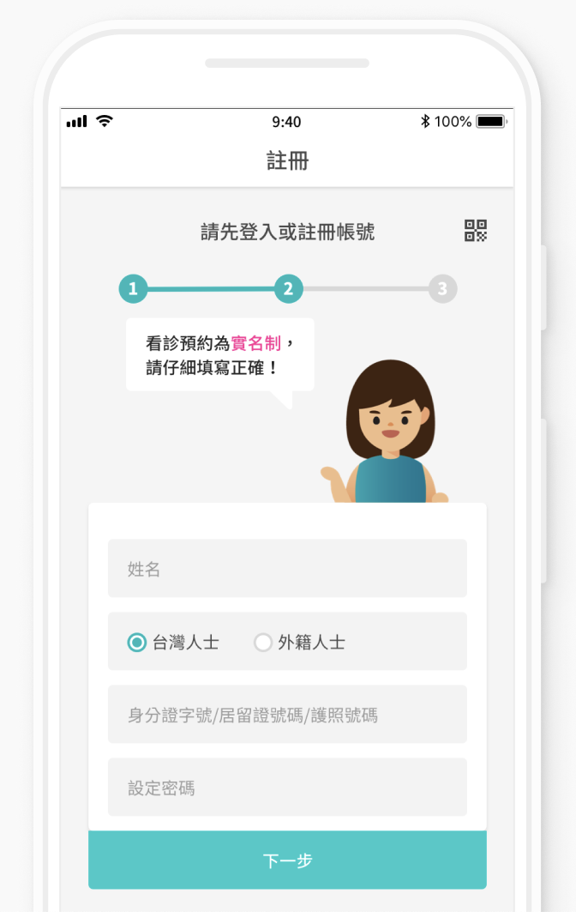
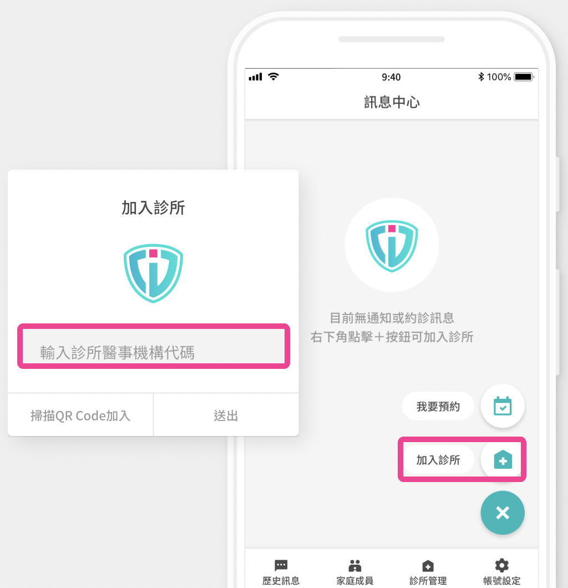
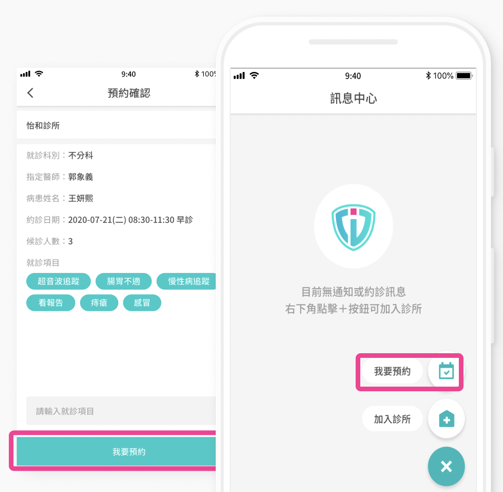
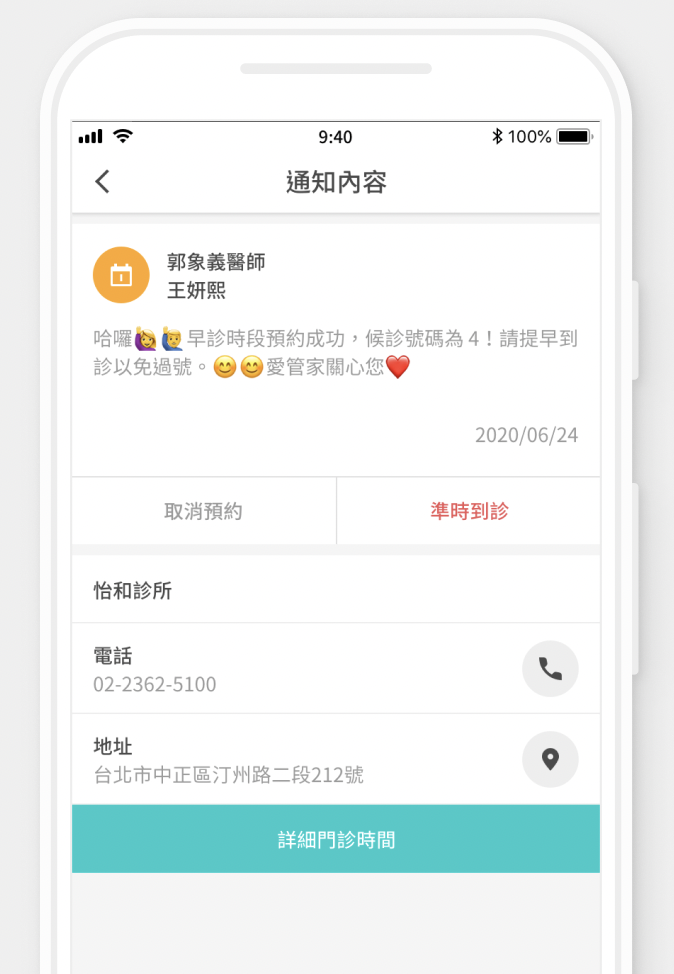

怡和診所
內兒科
|
肝膽腸胃科
診所專屬線上預約ＡＰＰ
|
3步驟完成預約
STEP
1
下載並完成註冊

STEP
2
加入診所
並輸入診所專屬之
醫事機構代碼
怡和診所機構代碼 3501183547

STEP
3
開始預約

即時推播提醒
看診前一天，
提醒隔日到診訊息
，
一鍵回覆
是否到診。

看診不用現場等
同步現場叫號
叫號列表
安卓專屬浮動視窗
立即下載
注意事項
:
初始者
:
一律
現場
掛號，並需核對
雙證件
。
複診者
:
照片如
無法辨識
或
不清楚
需備雙證件。
現場掛號
時間
:
早診
8:20
起，午診
14:20
起，晚診
18:20
起
每診預約名額20名，現場掛號10名，
共30名
。
預約方式採取
APP
及
電話預約
掛號均可，須於
看診前一天以前完成預約
，預約期間為3個月，
當天不接受預約掛號。
APP及電話預約:最慢須於
門診結束前一小時至櫃檯報到
(早上11:00前，下午4:30前，晚上8:30前)。
現場掛號:採限額10名，為維護醫療品質，
名額額滿即不再接受現場掛號
，
現場掛號最晚時間，為門診結束前30分鐘
(早上11:30前，下午5:00前，晚上9:00前)。
過號安排規則:
號碼過號者，需等待2位病患
，如過號第二位，則須等待4位病人，以此類推。
預約3次不到者
，即取消預約資格，請改現場掛號一次，日後恢復APP掛號資格。
特殊檢查(胃鏡、大腸鏡檢查)採
特約制
，請先看門診由醫師評估安排。